The same gravity, inside and outside the magnet
Gravitational and magnetic field variations synergize to cause subtle variations in the global transcriptional state of Arabidopsis in vitro callus cultures — NASA OSDR OSD-8, doi:10.1186/1471-2164-13-105. This study declares magnetic field and altered gravity as separate factors and carries gravity controls that use no magnet at all. One group changes the field and nothing else — the cleanest such comparison anywhere in this atlas, in the anchor species, at full coverage.
- 29,327loci on the array
- 125/125atlas loci reached
- 7experimental groups
- 1isolates the field
The atlas's loci are not more field-responsive than random loci. In the field-isolating contrast, the 125 QBO loci move by a mean |log2 fold change| of 0.1660, against 0.1763 for the same number of loci drawn at random from the other 29,202 on the array (p = 0.705, 10,000 permutations, one-sided). They move slightly less, not more.
And it is not a quirk of one group. The same test in all 7 groups — including the two that change gravity with no magnet — gives p between 0.65 and 0.91, never once favouring the atlas's loci.
What that does and does not mean
- It does not invalidate the ontology. QBO selects entities for the quantum chemistry they carry — an unpaired spin, a radical pair, a paramagnetic cofactor — which is a claim about what could mechanistically respond, not a prediction that it will respond to 16.5 T in callus culture.
- It does constrain what a coloured map may be said to show. On this dataset, the colours on the figures below are not evidence that the field acts selectively on these nodes. They show what these nodes did, next to a background that did as much.
- The same pattern appears in the gravity-only controls, which have no magnet in them at all. So this is not a statement about magnetism specifically; the QBO set is simply less variable than the array average in this experiment. A plausible reason — untested here — is that it is largely core bioenergetic and antioxidant machinery, which tends to be buffered.
- It is a strong-field result. Like OSD-27, this is tesla-scale, not the near-null regime the review is about. A locus unmoved at 16.5 T has not been shown unmoved at 30 nT.
| Group | What varies | QBO mean |log2FC| | Random background | p |
|---|---|---|---|---|
MAG_1g | field only | 0.1660 | 0.1763 ± 0.0181 | 0.705 |
MAG_mg | field and gravity together | 0.1933 | 0.2237 ± 0.0231 | 0.913 |
MAG_0.1g | field and gravity together | 0.1946 | 0.2175 ± 0.0223 | 0.846 |
MAG_1.9g | field and gravity together | 0.2073 | 0.2245 ± 0.0261 | 0.737 |
MAG_2g | field and gravity together | 0.1415 | 0.1483 ± 0.0159 | 0.653 |
RPM_mg | gravity only, no magnet | 0.1837 | 0.1984 ± 0.0186 | 0.786 |
LDC_2g | gravity only, no magnet | 0.1933 | 0.2074 ± 0.0231 | 0.719 |
Why this design is worth the trouble
Diamagnetic levitation normally confounds field with gravity: position inside the bore sets effective gravity, so changing one changes the other. This study breaks that confound twice over. It runs a 1g * point inside the magnet — where the magnetic force balances to leave effective gravity at 1g — against a 1g control outside it, and it reaches µg and 2g without any magnet using a random-positioning machine and a centrifuge.
| Group | Test | Reference | Field | Gravity | n | Isolates |
|---|---|---|---|---|---|---|
MAG_1g | MAG 1g* | 1g control outside the magnet | 16.5 T vs 0 T | 1g vs 1g | 3 | field |
MAG_mg | MAG mg* | 1g control outside the magnet | 10.1 T vs 0 T | µg vs 1g | 3 | — |
MAG_0.1g | MAG 0.1g* | 1g control outside the magnet | 14.7 T vs 0 T | 0.1g vs 1g | 3 | — |
MAG_1.9g | MAG 1.9g* | 1g control outside the magnet | 14.7 T vs 0 T | 1.9g vs 1g | 2 | — |
MAG_2g | MAG 2g* | 1g control outside the magnet | 10.1 T vs 0 T | 2g vs 1g | 3 | — |
RPM_mg | RPM mg* | RPM 1g control | 0 T vs 0 T | µg vs 1g | 3 | gravity |
LDC_2g | LDC 2g | LDC 1g control | 0 T vs 0 T | 2g vs 1g | 3 | gravity |
MAG_1g is the one group where the two
channels differ in field and in nothing else: 16.5 T
against 0 T, both at
1g. That is computed from the design table rather than asserted, and
the build fails if more or fewer than one group qualifies.
Where the numbers come from, and what they are not
There is no GeneLab differential expression for this study. Unlike
OSD-38 and OSD-27, it carries 20 two-colour arrays and a normalized archive with no
contrasts file. The values here are the depositors' own normalized log
ratios (GSE29787), which is a different and weaker provenance:
depositor_normalised.
No model was fitted, so no significance is shown. Two-colour arrays are natively ratios; there is no adjusted p-value in the source and none is invented. Every other overlay in this atlas marks significant nodes with an asterisk. These do not, deliberately.
The dye swap is already handled — by the depositors. The arrays alternate control-on-Cy3 and control-on-Cy5, and GEO's own value definition reads “normalized log2 ratio representing test g /reference 1g”: already oriented test-over-reference regardless of dye. This matters more than it sounds. Had the column been raw log(Cy5/Cy3) instead, averaging the replicates in each group would have cancelled real signal toward zero and produced a clean, entirely false null.
The probe-to-gene join is one extra inferential hop. The processed
tables key on bare Agilent feature numbers (1, 2,
3), so the GPL9020 platform table is required to reach genes at
all. Its GENE_SYMBOL column carries an AGI locus only sometimes — often a
trivial name like AtATG18b instead — and reading only that column reaches
17 of the atlas's 125 loci. The authoritative identifier sits in
ACCESSION_STRING as tair|AT4G30510.1, which reaches
all 125. Of 43,803 non-control probes,
38,613 get their locus that way,
646 only from the symbol column, and
4,546 carry no AGI at all and are dropped.
Multiple probes for one locus are combined by median rather than mean, so a single bad spot on a 45,000-feature array cannot drag a gene with it; replicate arrays are then combined by mean.
The maps
The field-isolating contrast on four maps, at 100% node coverage — every identifier-bearing node received a value, which no other page in this atlas achieves. Colour scales are fixed across all 7 groups so the panels are comparable. Read them with the specificity result above in mind.
{kind=link}

Data: OSD-8, contrast MAG_1g. organism Arabidopsis thaliana. 10 of 10 identifier-bearing nodes received a value (100%); 7 nodes carry no gene identifier and cannot. multi-locus nodes aggregated by mean.
{kind=link}
{kind=link}

Data: OSD-8, contrast MAG_1g. organism Arabidopsis thaliana. 4 of 4 identifier-bearing nodes received a value (100%); 4 nodes carry no gene identifier and cannot. multi-locus nodes aggregated by mean.
{kind=link}
{kind=link}

Data: OSD-8, contrast MAG_1g. organism Arabidopsis thaliana. 8 of 8 identifier-bearing nodes received a value (100%); 4 nodes carry no gene identifier and cannot. multi-locus nodes aggregated by mean.
{kind=link}
{kind=link}

Data: OSD-8, contrast MAG_1g. organism Arabidopsis thaliana. 9 of 9 identifier-bearing nodes received a value (100%); 1 nodes carry no gene identifier and cannot. multi-locus nodes aggregated by mean.
{kind=link}
Every node in every group
The field-isolating group is the one that matters; the rest are shown beside it so a node that moves under field-plus-gravity but not under field alone is visible as such. Values are log2 fold change, test over reference.
QBM-01 — 10 of 10 nodes (100%)
| Node | Tier | MAG_1g | MAG_mg | MAG_0.1g | MAG_1.9g | MAG_2g | RPM_mg | LDC_2g |
|---|---|---|---|---|---|---|---|---|
| ACONITASE | T3 | +0.404 | +0.506 | +0.396 | +0.303 | +0.329 | +0.058 | -0.214 |
| COMPLEX_I_FMN | T3 | +0.320 | +0.120 | +0.017 | +0.275 | +0.067 | +0.123 | -0.010 |
| AOX | T4 | -0.176 | -0.149 | -0.119 | -0.398 | -0.178 | +0.115 | -0.094 |
| LIPOYL_SYNTHASE | T3 | +0.173 | +0.210 | +0.143 | -0.145 | +0.130 | +0.347 | +0.193 |
| CYTOCHROME_C | T3 | -0.162 | -0.069 | -0.033 | -0.195 | -0.130 | +0.068 | +0.172 |
| RIESKE_FES | T3 | +0.048 | -0.000 | -0.022 | -0.028 | +0.033 | +0.002 | +0.017 |
| COMPLEX_II | T3 | -0.037 | +0.023 | +0.020 | +0.111 | -0.033 | -0.053 | -0.105 |
| MITO_SUPEROXIDE | T2 | +0.022 | +0.067 | +0.033 | +0.170 | -0.173 | +0.038 | -0.038 |
| COMPLEX_I | T3 | -0.014 | -0.067 | -0.076 | +0.041 | -0.104 | -0.016 | -0.043 |
| ALT_NADH_DH | T3 | -0.006 | +0.046 | +0.160 | -0.103 | -0.099 | +0.026 | -0.065 |
Scroll the table sideways to see every group.
QBM-03 — 4 of 4 nodes (100%)
| Node | Tier | MAG_1g | MAG_mg | MAG_0.1g | MAG_1.9g | MAG_2g | RPM_mg | LDC_2g |
|---|---|---|---|---|---|---|---|---|
| CRY1 | T1 | +0.255 | +0.153 | +0.245 | -0.018 | +0.205 | +0.092 | +0.490 |
| TRP_TRIAD | T2 | +0.144 | +0.117 | +0.189 | -0.016 | +0.084 | +0.168 | +0.273 |
| PHYB | T4 | -0.107 | +0.023 | -0.113 | -0.045 | +0.043 | -0.060 | -0.023 |
| CRY2 | T2 | +0.033 | +0.082 | +0.133 | -0.015 | -0.037 | +0.243 | +0.055 |
Scroll the table sideways to see every group.
QBM-07 — 8 of 8 nodes (100%)
| Node | Tier | MAG_1g | MAG_mg | MAG_0.1g | MAG_1.9g | MAG_2g | RPM_mg | LDC_2g |
|---|---|---|---|---|---|---|---|---|
| PLASTID_ROS | T2 | +0.182 | +0.232 | +0.245 | +0.034 | +0.056 | +0.100 | +0.203 |
| CATALASE | T3 | -0.099 | -0.052 | -0.049 | +0.037 | -0.044 | -0.069 | -0.130 |
| SUPEROXIDE_DISMUTASES | T4 | +0.097 | +0.142 | +0.158 | +0.082 | -0.035 | +0.068 | +0.070 |
| PEROXIREDOXIN_TRX | T4 | -0.072 | +0.090 | -0.018 | +0.068 | +0.012 | +0.008 | -0.020 |
| ASC_GSH_CYCLE | T3 | +0.047 | -0.052 | -0.044 | +0.093 | +0.086 | -0.072 | -0.032 |
| ASCORBATE_PEROXIDASE | T3 | +0.027 | +0.017 | -0.220 | +0.565 | +0.037 | +0.162 | -0.242 |
| MITO_SUPEROXIDE | T2 | +0.022 | +0.067 | +0.033 | +0.170 | -0.173 | +0.038 | -0.038 |
| COMPLEX_I | T3 | -0.014 | -0.067 | -0.076 | +0.041 | -0.104 | -0.016 | -0.043 |
Scroll the table sideways to see every group.
QBM-09 — 9 of 9 nodes (100%)
| Node | Tier | MAG_1g | MAG_mg | MAG_0.1g | MAG_1.9g | MAG_2g | RPM_mg | LDC_2g |
|---|---|---|---|---|---|---|---|---|
| CYSTEINE_SYNTHESIS | T4 | +0.230 | +0.528 | +0.373 | +0.588 | +0.442 | -0.158 | +0.252 |
| NFS1 | T4 | +0.223 | +0.145 | +0.215 | -0.092 | +0.125 | +0.253 | +0.273 |
| ISU1 | T3 | +0.153 | +0.150 | +0.180 | +0.045 | +0.093 | +0.070 | +0.060 |
| SUF_SYSTEM | T3 | -0.142 | -0.293 | -0.168 | -0.172 | -0.035 | -0.020 | +0.343 |
| FE_UPTAKE | T2 | +0.074 | -0.033 | -0.046 | +0.109 | +0.033 | -0.036 | -0.050 |
| FES_CLIENTS | T3 | +0.034 | +0.034 | -0.005 | -0.006 | +0.019 | -0.026 | +0.046 |
| FERREDOXIN | T2 | -0.027 | -0.030 | -0.082 | +0.013 | -0.013 | -0.010 | -0.017 |
| S_ASSIMILATION | T2 | +0.017 | +0.093 | +0.088 | +0.252 | +0.089 | -0.177 | -0.387 |
| FE_STORAGE | T4 | +0.005 | +0.080 | +0.109 | -0.054 | -0.041 | +0.129 | +0.268 |
Scroll the table sideways to see every group.
Reproducing it
PYTHONPATH=src python3 scripts/build_osd8_showcase.py
PYTHONPATH=src python3 scripts/build_osd8_page.pyThe permutation test is seeded (20260924) and runs
10,000 draws, and its pool is built in sorted key order so the p-values
above reproduce exactly. That second part was a real defect: the platform parser built
its index by iterating a set, so the dictionary's key order differed on
every run, random.sample drew different background loci, and a seeded test
still gave a slightly different p-value each time while this page claimed it did not.
Both the parser and the test are now order-independent, verified across repeated runs.
The correction moved this contrast's p-value from 0.717 to 0.705 — the
conclusion is unchanged, but the earlier figure was not reproducible. The design table,
the platform join report, per-group specificity and every per-node value are written to
results/osd8/record.json, and this
page is generated from that record.